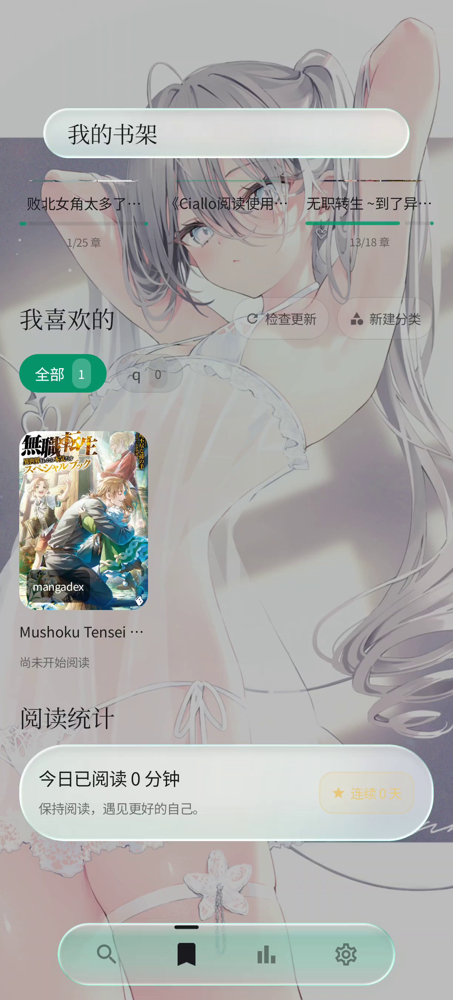
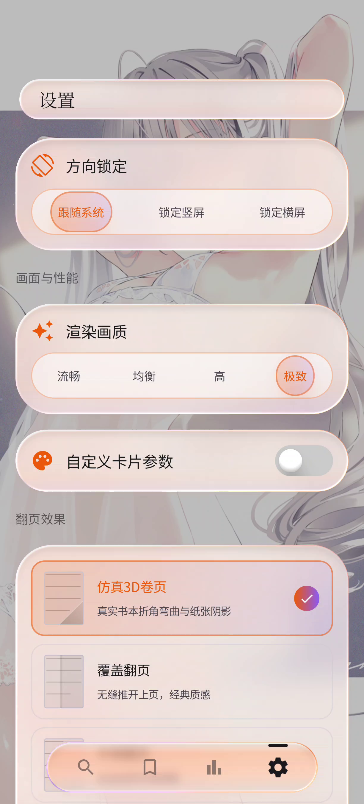

CialloReader · Product Film
Ciallo
阅读
Where stories unfold.

01 / REVEAL
Designed for reading
轻一点，
更沉浸。
A reading space that feels alive.

A world of stories
故事，
正在展开。
Open a page. Enter a world.
Ciallo阅读
CialloReader